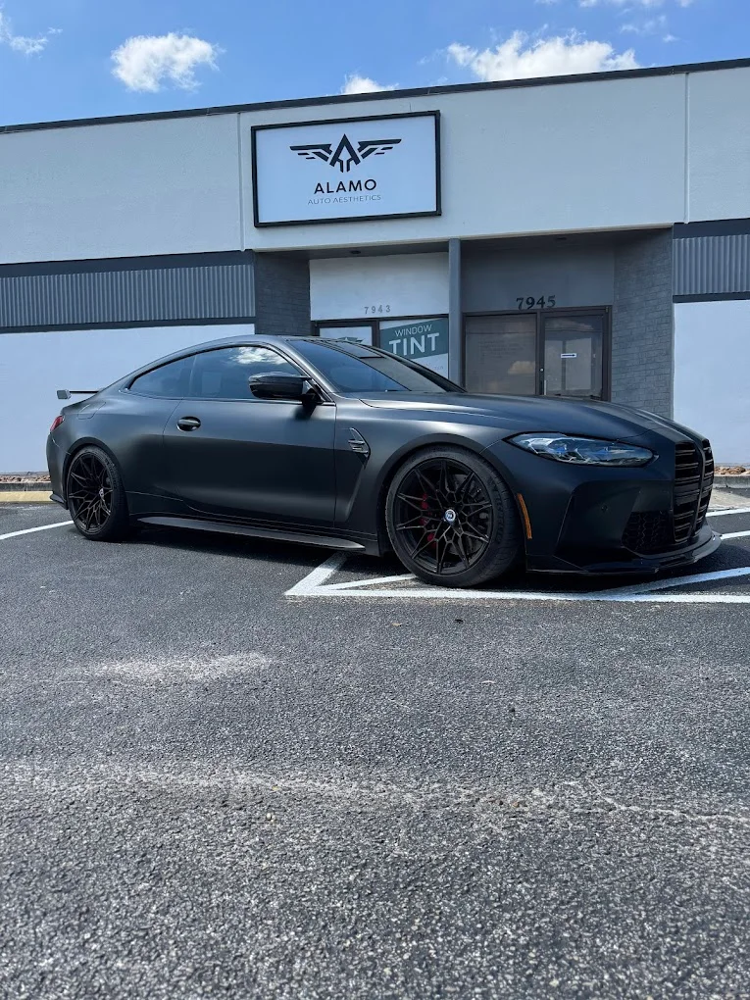

Cleaning your AC filters every three to four weeks is one of the simplest and most effective maintenance tasks a Dubai resident can carry out. Clogged filters force the fan motor to work harder, reduce airflow across the evaporator coil, and can cause the unit to freeze up or shut down on high-limit protection. In Dubai's dusty environment, filters accumulate debris faster than in most climates. A clean filter costs nothing and prevents a significant proportion of the service calls we receive every summer.
Our 15-day labour warranty means that if the same fault recurs within a fortnight of your repair, we return and fix it without additional charge. We stand behind the quality of our work, and we expect our customers to feel confident in the service they receive. If you are dealing with an appliance emergency anywhere across Dubai, CoreHome Appliancesfix is ready to respond.
A second very common fault is the oven cutting off unexpectedly during cooking. This is usually a thermal fuse or thermostat issue. The thermal fuse is a safety device that trips when the oven overheats. In Dubai apartments and villas where kitchens are often poorly ventilated, ovens run at higher ambient temperatures and the thermal fuse blows more frequently than in cooler climates. Our team stocks OEM thermal fuses for all major brands and can replace them on the same visit.
Commercial Window Tinting in Rockville, MD
Our same-day emergency repair service covers all major residential areas across Dubai. Whether you are in a high-rise apartment in Downtown Dubai, a townhouse in Arabian Ranches, a villa in Jumeirah, or a studio flat in Deira, we have technicians operating nearby. Our dispatch model is built to minimise travel time, so when you book an emergency repair, you are typically receiving a technician who is already working in your part of the city.
Checking your cooking range burners and oven door hinges periodically helps catch developing faults before they become complete breakdowns. Burner ignition leads that are cracked or corroded cause intermittent ignition failures that worsen over time. Oven door hinges that feel stiff or uneven indicate wear that will eventually prevent the door from sealing properly, leading to heat loss and inaccurate oven temperatures. Addressing these early is quick, inexpensive, and avoids the inconvenience of a complete breakdown.
Every repair we carry out uses genuine or OEM-quality replacement parts. We do not fit low-grade imitation components to save cost, because these fail faster and create secondary damage to connected components. When you pay for a repair with CoreHome Appliancesfix, you are paying for a part that will perform to the original specification and last as long as the appliance warrants. This is especially important in Dubai's demanding operating environment, where a weak component under constant heat and voltage stress will fail quickly.
Refrigerator and freezer breakdowns are another frequent emergency. A fridge that stops cooling, runs constantly without reaching temperature, or begins making loud knocking noises is usually showing signs of a failing compressor, a blocked condenser coil, or a faulty thermostat. In Dubai, where people keep large quantities of perishable food at home, a refrigerator breakdown can result in significant financial loss within just a few hours. Our refrigerator repair services in Dubai are available the same day for exactly this reason.
Dubai's summer heat is the single biggest accelerant of appliance wear. Outdoor temperatures above 45°C in July and August mean that AC compressors work continuously at near-maximum capacity for months at a time. This sustained load increases the risk of capacitor failures, overheated motors, and refrigerant pressure problems. Even split AC units installed in insulated villas run far harder in Dubai than the same model would in a temperate climate, which is why regular servicing and prompt repairs are so important.

Ceramic coating in Alexandria, VA
The high frequency of use in Dubai households also drives faster component wear. Extended families, live-in domestic staff, and the cultural norm of cooking fresh meals daily mean that washing machines, cooking ranges, and dishwashers in Dubai homes often run significantly more cycles per week than the usage assumptions built into standard appliance warranties. This means components like bearings, carbon brushes, heating elements, and door hinges reach their wear limits earlier than manufacturers' estimates, making prompt repair when faults develop all the more important.
Genuine replacement parts are central to how we work. We do not use imitation or low-grade components that compromise the appliance's performance or lifespan. Whether we are replacing a compressor relay, a PCB control board, a heating element, or a door latch, the part we fit meets the manufacturer's original specification. This matters particularly in Dubai's conditions, where a substandard part under heat and voltage stress tends to fail again quickly.
Dubai's environment is harder on kitchen appliances than most people realise. Voltage fluctuations from the power grid, high ambient temperatures, and dusty air all affect the internal components of electric ovens and cooking ranges over time. Thermostats drift, heating elements corrode faster, and fan motors clog with fine dust. These are not manufacturing defects — they are the natural result of running appliances in this climate. Understanding this is part of what makes our technicians effective. They know what to expect inside a Dubai kitchen and arrive with the right parts ready.
CoreHome Appliancesfix provides certified, same-day home appliances repair across Dubai and Sharjah. Our technicians arrive with a full toolkit, a diagnosis process that gives you clear answers within minutes, and a stock of genuine replacement parts for the most common appliance brands. There are no vague estimates, no unnecessary part replacements, and no hidden charges. We believe the repair process should be honest and straightforward, from the first call through to the final test.
Window Tinting service in Alexandria, VA
Our 15-day labour warranty applies to every repair. If the same fault returns within a fortnight, we come back and resolve it at no additional charge. This warranty reflects the confidence we have in both the components we use and the skill of the technicians who fit them. We log every repair job, so there is a clear record of what was done and when. This documentation also helps us identify if a particular appliance model or component is showing a pattern of repeat failure, allowing us to advise customers proactively.
Our repair team covers all major home appliances, including AC units, washing machines, refrigerators, deep freezers, electric ovens, electric stoves, cooking ranges, and dishwashers. Whether you live in a compact studio in Dubai Marina or a large family villa in Mirdif, we come to you. Our technicians are experienced with the specific brands most common in UAE homes, and they carry spare parts that cover the majority of call-outs, so most repairs are completed in a single visit.
Our technicians are certified professionals with hands-on experience across all major home appliance categories. They are not generalists guessing at faults — they are trained specialists who have diagnosed and repaired hundreds of similar issues. Each technician works to a structured diagnostic process that identifies root causes accurately before any work begins. This means the repair is done correctly the first time, and you are not called back a week later for the same problem.

PAINT PROTECTION FILM SERVICES IN ROCKVILLE MD
Our 15-day labour warranty begins from the date of the completed repair. If the same fault recurs within this period, we return to investigate and resolve it at no additional labour cost. This warranty reflects our confidence in the quality of the components we use and the standard of the repair work carried out. All repairs are logged, so your technician's visit and the work completed are on record with our system for future reference.
Humidity in coastal areas such as Dubai Marina, JBR, and Palm Jumeirah creates a different set of problems. High ambient humidity accelerates corrosion on exposed metal contacts, particularly in washing machine control panels and dishwasher door mechanisms. Salt in the sea air, carried inland on summer winds, compounds this effect. Appliances in these areas often develop control board faults, relay failures, and intermittent electrical issues that are directly related to the local environment rather than the quality of the appliance itself.
The diagnosis stage is thorough and transparent. Our technician explains the findings to the customer before proceeding to any repair. If the fault is a straightforward component replacement — such as a burned-out heating element or a failed relay — the repair is typically completed in the same visit. If the issue is more complex, such as a compressor replacement or a full PCB swap, we provide a clear timeline and confirm parts availability before you authorise any work.
Al Barsha, Mirdif, Muhaisnah, and Nad Al Hamar represent established residential communities with a large concentration of family villas and spacious apartments. In these areas, we frequently service larger domestic appliances including American-style refrigerators, freestanding washing machines, and full-size cooking ranges. Same-day availability is particularly important for families in these communities, where a working kitchen and laundry are central to daily life.
Descaling your washing machine every three months is essential in Dubai's hard water environment. Run an empty hot cycle with a descaling agent or white vinegar to dissolve mineral deposits from the heating element, drum, and internal pipework. This extends the life of the heating element significantly, maintains washing performance, and prevents the kind of gradual build-up that eventually blocks the drain pump or damages the pump impeller. It is a ten-minute task that avoids an expensive repair call.
Ceramic coating in Rockville MD
Fan motor failures affect fan-assisted and convection ovens specifically. If your oven is producing heat but the internal fan is not circulating it evenly, you will notice hot spots and uneven cooking results. The fan motor itself may have seized, or the capacitor that starts the motor may have failed. Both are common wear items in Dubai conditions, where dust accumulates inside appliances faster than in more temperate environments.
Many Dubai residents have experienced the frustration of calling a repair service only to be told the earliest slot is three or four days away. For a household with young children or elderly family members, a malfunctioning AC or a broken refrigerator simply cannot wait that long. Our same-day service model was built specifically around this reality. When you contact CoreHome Appliancesfix, we confirm a booking window and send a qualified technician to your home within hours, not days.
Washing machine failures — such as mid-cycle stops, water not draining, the drum refusing to spin, or the machine leaking onto the floor — cause immediate disruption to a household. These problems are often caused by clogged drain pumps, worn carbon brushes on the motor, failed door latches, or a burned-out control board. Hard water in Dubai accelerates wear on internal components, making washing machines one of the most frequently repaired appliances in the city.

Commercial Window Tinting in Rockville, MD
A broken appliance rarely waits for a convenient moment. When your washing machine floods the laundry room at 7 in the morning, your refrigerator stops cooling overnight, or your air conditioning unit cuts out during a Dubai summer, you need a reliable technician at your door the same day. Waiting days for a repair appointment is not an option for most Dubai households — particularly in a climate where a faulty fridge or AC can spoil food, disrupt sleep, and make daily life genuinely uncomfortable. To learn more about our complete service range, explore our Ceramic coating in Alexandria, VA solutions.
Dubai Marina, JBR, Palm Jumeirah, and the surrounding coastal communities are areas we cover daily. These communities have high concentrations of luxury apartments with premium appliances from Miele, Bosch, Siemens, and other European brands. Our team is experienced with the specific models common in these developments and carries appropriate components. The building access procedures in these communities are familiar to our technicians, ensuring arrivals are smooth and efficient.
We service all the major appliance brands found in Dubai homes, including Samsung, LG, Bosch, Siemens, Whirlpool, Haier, Carrier, Daikin, Midea, Gree, Electrolux, Miele, Hitachi, Toshiba, General, Panasonic, and Sharp. Whether your home contains a mix of budget and premium brands or a single make throughout, our team has the knowledge, tools, and parts to carry out a professional repair. If you need appliances repair in Dubai for any make or model, CoreHome Appliancesfix is equipped to help.
Samsung is one of the most widely owned appliance brands in Dubai, and our technicians are fully trained on Samsung washing machines, refrigerators, AC units, and dishwashers. Common Samsung faults we repair include 4E and 5E error codes on washing machines, compressor failures on Samsung twin-door refrigerators, and PCB faults on Samsung split AC inverter units. Genuine Samsung-compatible parts are carried in our standard inventory, allowing same-day resolution of most common faults.
Once the repair is completed, the technician tests the appliance through a full operational cycle to confirm the fault is fully resolved. For refrigerators, this means checking that the correct running temperatures are achieved and that the compressor is cycling normally. For washing machines, we run a short test wash. For AC units, we check airflow, temperature differential, and system pressure. We do not leave until the appliance is working as it should.
One of the most frequent complaints we receive is that the oven heats unevenly or fails to reach the set temperature. In most cases, this points to a failing heating element — either the upper bake element, the lower broil element, or both. Over time, these elements develop micro-cracks or visible burn marks, which interrupt the electrical circuit and reduce heat output. Our technicians test each element individually using a multimeter before recommending a replacement, ensuring accuracy rather than guesswork.
Ceramic coating in Alexandria, VA
Transparent diagnosis and pricing are principles we hold to on every job. Before any work begins, you receive a clear explanation of the fault, the recommended repair, the cost of the part, and the labour charge. There are no hidden fees added to the invoice after the work is done. If the diagnosis reveals a fault that is uneconomical to repair — for example, a compressor failure on an old appliance close to the end of its useful life — we tell you that honestly rather than proceeding with expensive work that does not represent value.
Bur Dubai, Karama, Satwa, and Oud Metha are older residential areas where apartment stock can date back several decades. Appliances in these buildings sometimes face voltage challenges due to older wiring, and our technicians are experienced in diagnosing faults with this in mind. We serve these communities fully and understand the mix of older and newer appliance models found in long-established Dubai neighbourhoods.
A faulty oven can disrupt your entire household routine, especially in a busy Dubai home where cooking is part of daily life. Whether your oven is failing to heat, cutting off mid-cycle, or showing an error code you don't recognise, the problem rarely fixes itself. Ignoring a fault often leads to a bigger, costlier repair down the line — and in the meantime, your kitchen is out of action. CoreHome Appliancesfix provides certified oven repair in Dubai, handling everything from simple element replacements to complex control board faults.